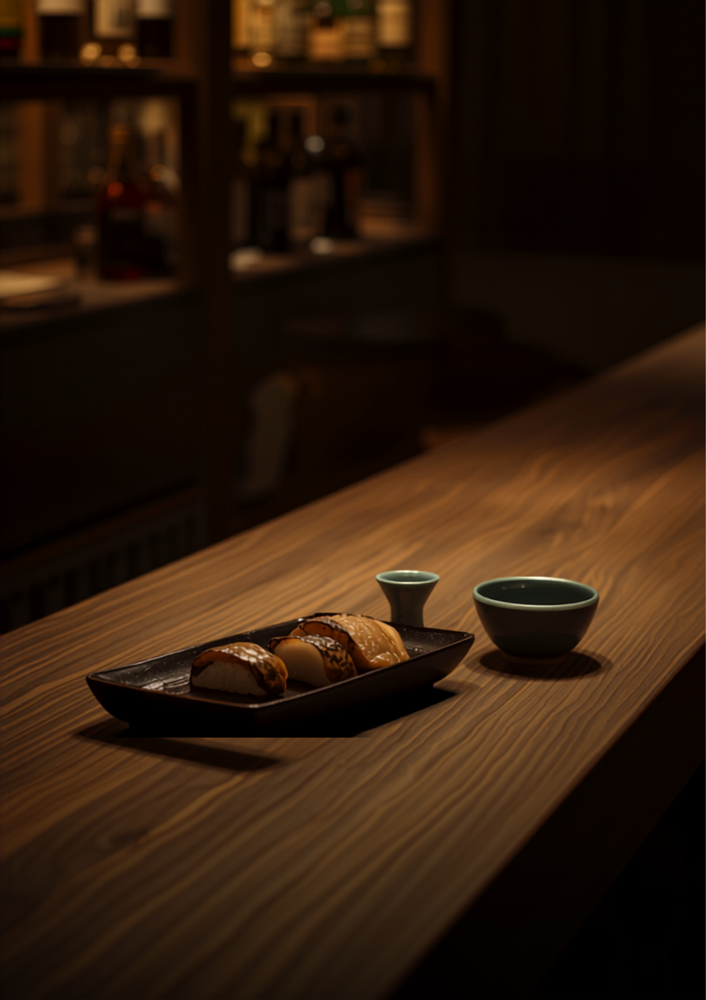
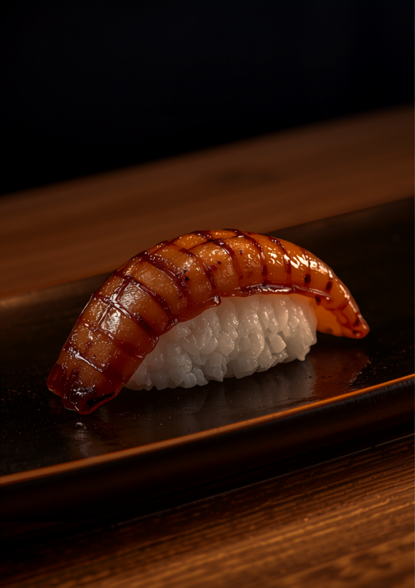

二階にあがると、
寿司と、魔法の水。
木の扉を開けて、L字カウンターへ。名店で腕を磨いた大将の握りを、気楽に、一杯とともに。
寿司屋の握りを、居酒屋の気楽さで。
大将・瀬川大平さんは、シーホークホテルの和食店から天神・警固の名店へと、腕を振るってきた料理人。その握りとつまみを、肩肘張らずに楽しめるのが、この店のいいところ。
「寿司屋のそれ」とまではいかなくても、居酒屋でちゃんとしたお寿司が食べられる——そんな、ちょうどいい距離感。家族的で、なじみやすい二階の隠れ家です。
まずは、つまみで一献。
小ポーションのつまみセット
「寿司の前につまみを、でも決めかねて…」そんな時は、小ポーションのつまみセットを。手際よく美しく盛られたそれは、いかにも日本酒に合うものばかり。こういう気配りが、うれしい。
舞茸土瓶蒸し◎ この日の優勝
香り立つ土瓶蒸し。滋味深い、秋の一品。
白子天ぷら
とろりと濃厚な白子を、さっと天ぷらで。
おでん（白子入り）
じんわり出汁のしみた、あたたかいおでん。
タイ刺し・焼き魚
鯛の刺身に、いわしの塩焼き。酒がすすむ。

この日の、煮あなご。
「煮あなごの握りが、めちゃ美味しかった。」
ふっくらと炊いた穴子に、艶やかなつめ。サーモンは炙りで、香ばしく。1貫ずつでも、3貫・4貫のセットでも。今日の気分で、好きなだけ。
日本酒を、ここでは
「魔法の水」と呼ぶ。
大将のこだわりが詰まった日本酒。握りとつまみに合わせて、一杯、また一杯。「初めて飲んだ肥前蔵心が美味かった」——そんな出会いも、ここにはあります。
※ 昼飲みセット（そうめんと5貫セット）も。あとから、ずしりと効いてくる、心地よさ。
通った人の、声。
気楽に寿司で飲めるお店。小ポーションのつまみセットを作ってくれて、美しく、いかにも日本酒に合うものばかり。1貫ずつもよし、セットもある。目の前に地下鉄入り口があるのもありがたい。
— Google の口コミより煮あなごの握りがめちゃ美味しかったのと、サーモンも炙ってあってうまっとなりました。日本酒にもこだわってあって、初めて飲んだ肥前蔵心という日本酒が美味かったです。
— Google の口コミより木製のL字カウンター7席のみ。行く時は予約した方がいいでしょう。この日はアラカルトで、舞茸土瓶蒸しがこの日の優勝。居酒屋でちゃんとしたお寿司が食べられるのはよいと思います。
— Google の口コミより二階で、お待ちしています。
藤崎商店街を入ってすぐ、階段を上がって木の扉の向こう。隣は同じ2階のバーですので、お間違いなく。7席の小さな店ゆえ、当日でも、まずはお電話を。
- 店名
- すし 酒 おつまみ 瀬川
- 所在
- 福岡市早良区 藤崎（商店街入ってすぐ・2階）
- 電話
- 090-4487-3208
- 席数
- 木製L字カウンター 7席
- コース
- ¥4,500 / ¥8,800（要予約）
- 最寄
- 地下鉄 藤崎駅（目の前に入り口）
※ 7席のみのため、ご予約がおすすめです。当日のご予約も、お気軽にお電話ください。
SUSHI ・ SAKE ・ SEGAWA ／ FUJISAKI